Graphics
Simple plots can easily be produced with the plotting functions in
base R. These are installed by default with R and do not
require any additional packages to be installed. Theyre quick to type,
straightforward to use in simple cases, and run very quickly.
If you want to do anything beyond very simple plots, though, its generally better to switch to ggplot2. This is in part because ggplot2 provides a unified interface and set of options, instead of the grab bag of modifiers and special cases required in base graphics. Once you learn how ggplot2 works, you can use that knowledge for everything from scatter plots and histograms to violin plots and maps.
In this section, we will illustrate how to make a graph with base graphics and how to make a similar graph with the ggplot() function in ggplot2. Having both of these examples will help you transition to using ggplot2 for when you want to make more sophisticated graphics.
Get inspired by THE R GRAPH GALLERY
base package
Basic scatter and line charts
First well produce a very simple graph using the values in a numeric vector:
Now we plot the treatment vector with default parameters.

We produced a simple scatter plot. Let make it a line plot:

We changed the type of plot to o which plot both
points and lines. Check
?plot to see a complete list and make a
line plot. By changing the argument type,
we are customizing the plot.
Plot customization

Title
We add a title with main argument and or a sub-title
with the sub argument.

Axis labels
We can customize our x and y axis label with the xlab
and ylab arguments respectively.

We can control the orientation of labels on axis using
las argument.


Point size
We can control the size of points in our plot using the
cex parameter.

Point shape
We can control the type of points in our plot using the
pch parameter.


Line weight
Similarly when plotting a line we control size with lwd
parameter.


Line type
We can also control the type of line with lty
parameter.


Color
An important parameter we can control is color. We can control color
or lines or points using the col argument.

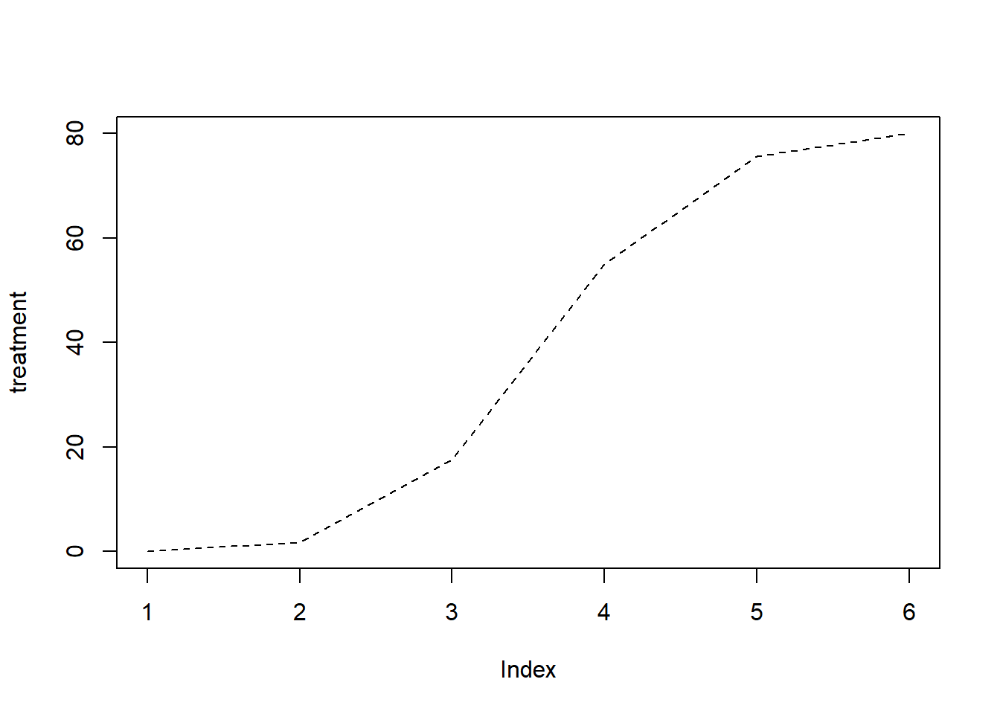
You can find an extensive list of R colors here.
But you can also use hexadecimal code color here. You can also specify
rgb color and use define alpha to set
transparency.
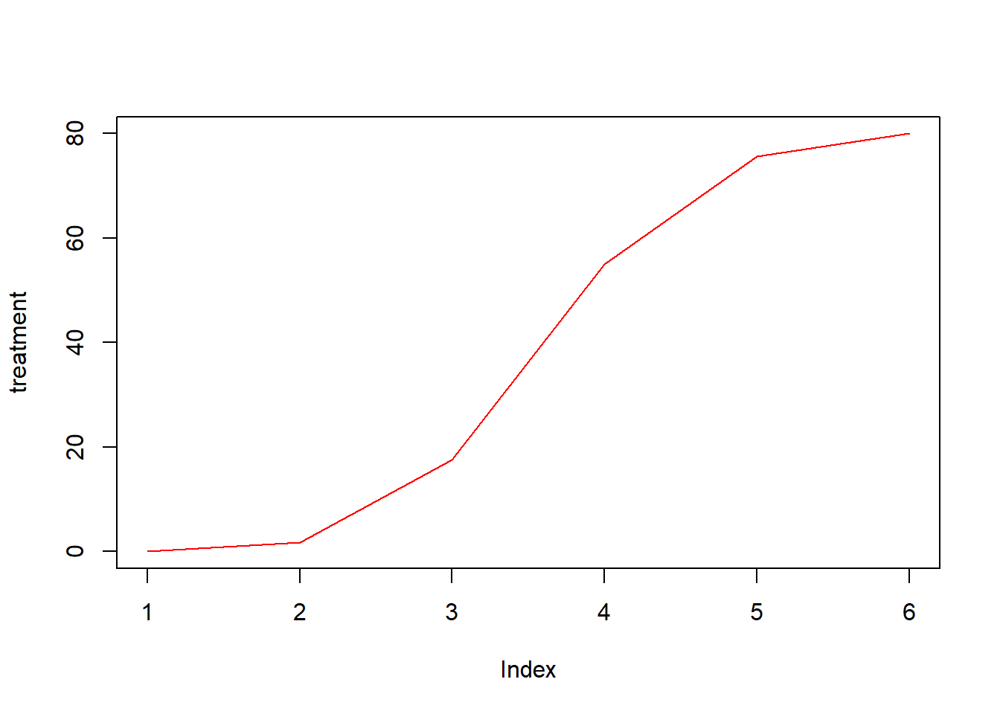
par set or query graphical parameters. Among other uses
(size of plot margins mar, spacing between margin elements
mgp, dimensions of whole plot fig, etc.), you
modify par to plot two graphs next to each others
par(mfrow = c(1, 2))
plot(treatment, type="p", cex=4, pch=20, col=myRed)
plot(treatment, type="p", cex=4, pch=20, col='#87736f')
Using par(mfrow = c(1, 2)), you split your graphical
window into a grid by specifying the number of row first and the number
of column them. Any modification using par will be applied
to next plots. You can terminated using dev.off().
## null device
## 1A lot of graphical parameters can be modified using par.
See the full list of set parameters using par() or
?par. Change will apply to all subsequent plots until your
reset your graphical parameters using dev.off().
Multiplot vectors plot
Index plot are generally use explore your data nut of course the
plot function will accept two vectors to be plotted against
each other.

We often want multiple lines in same plot. So if we want to plot scores for control and treatment against position we will need a new method.
We can add an additional line to our existing plot using the
lines() function.

Defining your limits
The new line doesnt quite fit into our original plot. We can extend
our x or y axis by specifying values to xlim and
ylim arguments directly.
plot(treatment, type="o", col="blue",ylim=c(0,100))
lines(control, type="o", pch=22, lty=2, col="red")
Instead of defining the axis limits explicitly we can compute the
y-axis values using the range function. This means any updates to our
data will be automatically reflected in our graph. range()
returns a vector containing the minimum and maximum of all the given
arguments.
Calculate range from 0 to max value of data.
## [1] 0 100Then plot using this range values as your limits

Customize axes
To be able to customize axes we need to turn off axes and annotations
(axis labels). We will then be able to specify them ourselves. We turn
of axis and annotation plotting using axes=FALSE and
ann=FALSE

We can create our own X axis by using the axis()
function. We specify the side argument for where to place
axis, the at argument to specify where to put axis ticks
and lab argument to specify labels for axis ticks.
plot(treatment, type="o", col="blue", ylim=g_range, axes=FALSE, ann=FALSE)
axis(side=1, at=1:6, lab=c("Mon","Tue","Wed","Thu","Fri","Sat"))
We can make our y axis with horizontal labels that display ticks at
every 20 marks in a similar way. We specify our side and
use seq() function to make axis tick postions for
at argument. We can use our y-axis range again to help
define how many ticks we need.
plot(treatment, type="o", col="blue", ylim=g_range, axes=FALSE, ann=FALSE)
axis(side=1, at=1:6, lab=c("Mon","Tue","Wed","Thu","Fri","Sat"))
axis(2, las=1, at=seq(0,g_range[2],by=20))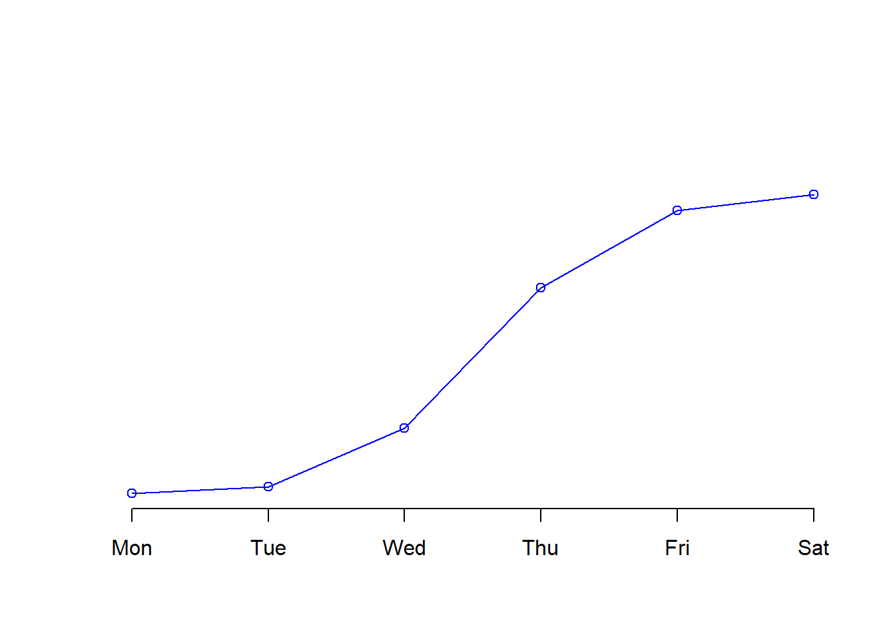
Framing plot
We can now add a box around our plot using the box()
function.
plot(treatment, type="o", col="blue", ylim=g_range, axes=FALSE, ann=FALSE)
axis(side=1, at=1:6, lab=c("Mon","Tue","Wed","Thu","Fri","Sat"))
axis(2, las=1, at=seq(0,g_range[2],by=20))
box()
And add back our control using the line argument.
plot(treatment, type="o", col="blue", ylim=g_range, axes=FALSE, ann=FALSE)
axis(side=1, at=1:6, lab=c("Mon","Tue","Wed","Thu","Fri","Sat"))
axis(2, las=1, at=seq(0,g_range[2],by=20))
lines(control, type="o", pch=22, lty=2, col="red")
box()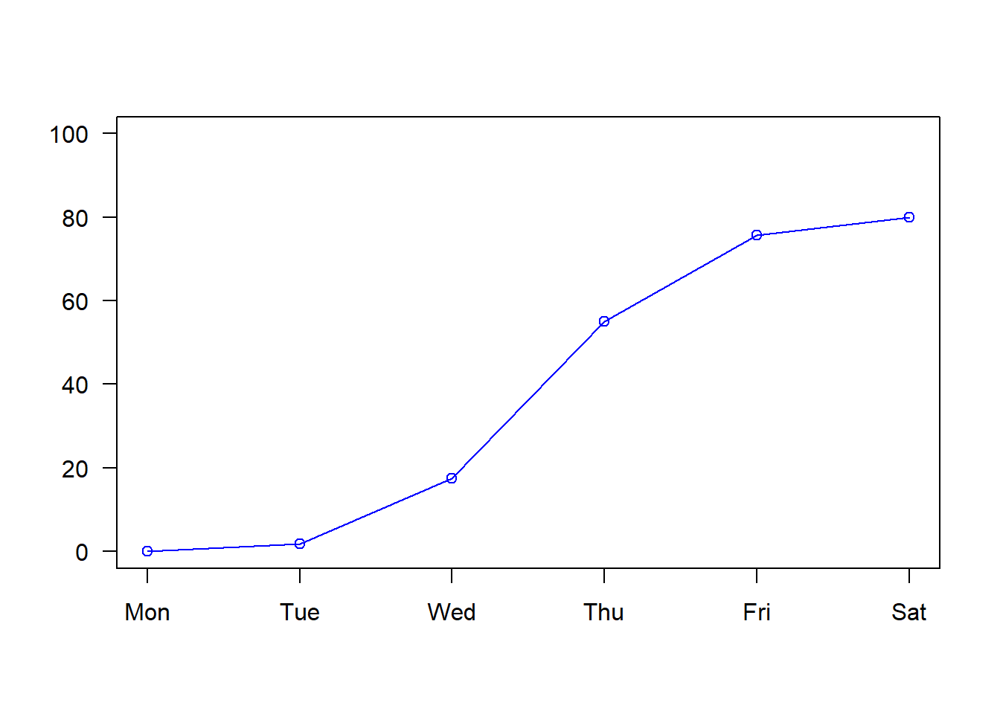
Legends
Finally we may wish to add a legend to out plot. We can add a legend
to current plot using the legend() function. We need to
specify where to place legend in plot, the names in legend to
legend argument and any additional point/line type
configuration we used e.g the color and shape.
plot(treatment, type="o", col="blue", ylim=g_range, axes=FALSE, ann=FALSE)
axis(side=1, at=1:6, lab=c("Mon","Tue","Wed","Thu","Fri","Sat"))
axis(2, las=1, at=seq(0,g_range[2],by=20))
box()
legend("topleft",legend=c("treatment","control"), col=c("blue","red"), pch=21:22, lty=1:2) 
Final
In our line plot we have already done a good job of making it easier to differentiate the lines as we have different line styles and different shape points. Other things we can do is also differentiate thickness. To make that final plot you can see that there are many lines of code we put together.
plot(treatment, type="o", col="blue", lwd=1, ylim=g_range,axes=FALSE, ann=FALSE)
axis(1, at=1:6, lab=c("Mon","Tue","Wed","Thu","Fri","Sat"))
axis(2, las=1, at=20*0:g_range[2])
box()
lines(control, type="o", pch=22, lty=2, col="red", lwd=2.5)
legend("topleft",legend=c("treatment","control"),col=c("blue","red"), pch=21:22, lty=1:2, lwd=c(1,2.5))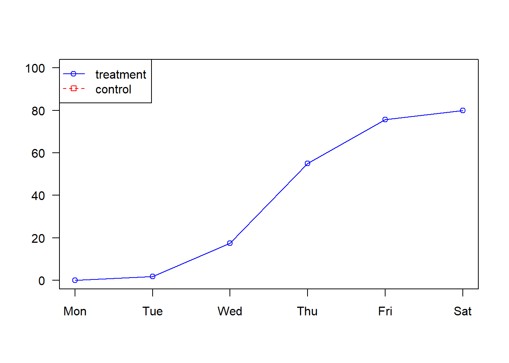
Palettes
~4% of people are color blind. In white males this number raises to
~10%. Considering the demographics in science, there will likely be
someone with color blindness in your meeting. Palette packages exist
that contain a curated collection colors. These can be themed for
anything, from La Croix flavors to Pokemon. A list of palettes can be
found here.
Some of the more useful palettes are designed to be color blind
friendly, like viridis. To get colors from the package you
just have to call the function with the number of colors you want.
## [1] "#440154FF" "#3B528BFF" "#21908CFF" "#5DC863FF" "#FDE725FF"Good data visualization
There are often a trade offs in creating good plots.
- Is it easy to digest and accesible to everyone?
- Is it engaging and appealing?
- Does it contain all the information with nothing superfluous?
- Is it the best way to tell the story I want to tell?
Fundamentals of Data Visualization by Claus O. Wilke is a good resource on the theory of making data visualizations the right way.
Histograms
Base graphics has a useful built-in function for histograms too. This
is the hist() function, which just needs a numeric
vector.

Similar customization exists as for other plots.

We can create more fine grained histogram by specify the number of
required bins to the breaks argument.
par(mfrow = c(1, 2))
hist(treatment, col="lightblue", ylim=c(0,5), cex.main=0.8, breaks = 2)
hist(treatment, col="lightblue", ylim=c(0,5), cex.main=0.8, breaks = 10)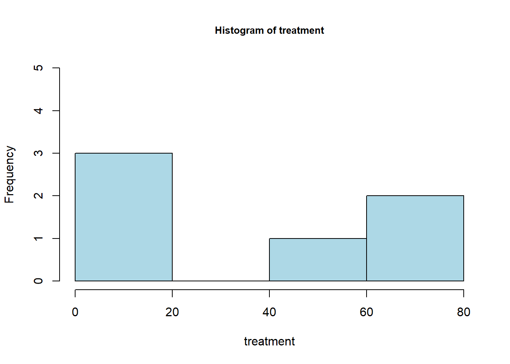
## null device
## 1Dot charts
Base graphics also has a dotchart() function. Dot charts
help compare paired data. First though we need to
modify data to a matrix. As we are comparing in pairs as opposed to all
control versus treatment, we use the function t to return
the transpose of a matrix. This means rows are now columns and the
columns are now rows.
The Cleveland plot on the transposed matrix:

Some customization:

Box plots
The final plot we will look at here is a box and whisker plot. Boxplots allow you to quickly review data distributions, showing the median and 1st/3rd quartile.

Introduction to boxplot
First lets read some gene expression data
## Untreated1 Untreated2 Treated1 Treated2
## ENSDARG00000093639 0.8616832 1.9311442 0.1041508 0.14055604
## ENSDARG00000094508 0.9857575 2.0256352 0.1549917 0.20301609
## ENSDARG00000095893 0.8498889 1.9875580 0.2317969 0.20925123
## ENSDARG00000095252 0.9242996 2.0857620 0.2562264 0.24669079
## ENSDARG00000078878 0.3571734 0.4653908 0.1167221 0.09710237
## ENSDARG00000079403 1.0604071 1.2581398 0.3884836 0.31567299Now we can use the boxplot() function on our data.frame
to get our boxplot

This plot would look better on a log scale. We can add addition colors and labels as with other plots.

Check at ?boxplot. x can be a formula of
the type y ~ grp where y is a numeric vector
of data values to be split into groups according to the grouping
variable grp (usually a factor).
boxplot(len ~ dose, data = ToothGrowth,
boxwex = 0.25, at = 1:3 - 0.2,
horizontal=T, las= 1,
subset = supp == "VC", col = "yellow",
main = "Guinea Pigs' Tooth Growth",
xlab = "tooth length",
ylab = "Vitamin C dose mg",
xlim = c(0.5, 3.5), ylim = c(0, 35), yaxs='i')
Note that by default the specified ranges of a plot are enlarged by
6%, so that the specified values do not lie at the very edges of the
plot region. This is appropriate for most types of plot, but sometimes
we want the specified limits to lie at the edges of the plot window.
This can be specified separately for each axis using the arguments
xaxs='i' and yaxs='i'.
Extra elements
Text
Custom text can be added to you plot using the text
function. Simply provide the position and the label. You can use the
data itself to label data points. The adj argument allows
you to nudge the annotation a constant amount away from the defined
position. Any labels to be added to the margin need to use
mtext instead.
plot(control, treatment)
text(20,60, 'THIS AREA OF \n THE PLOT HAS \n NO SAMPLE', col='red')
text(control, treatment, letters[1:6], adj=c(0,-1), col='blue')
Lines
abline allows you to add specific straight lines. This
is often useful to help demonstrate known linear relationships or
thresholds as reference points for your data. h =
horizontal line with y-intercept v = vertical line with
x-intercept a,b = intercept and slope.
plot(control, treatment)
abline(h=10, col='blue')
abline(v=50, col='red', lwd=2)
abline(a=0, b=1, lty=2)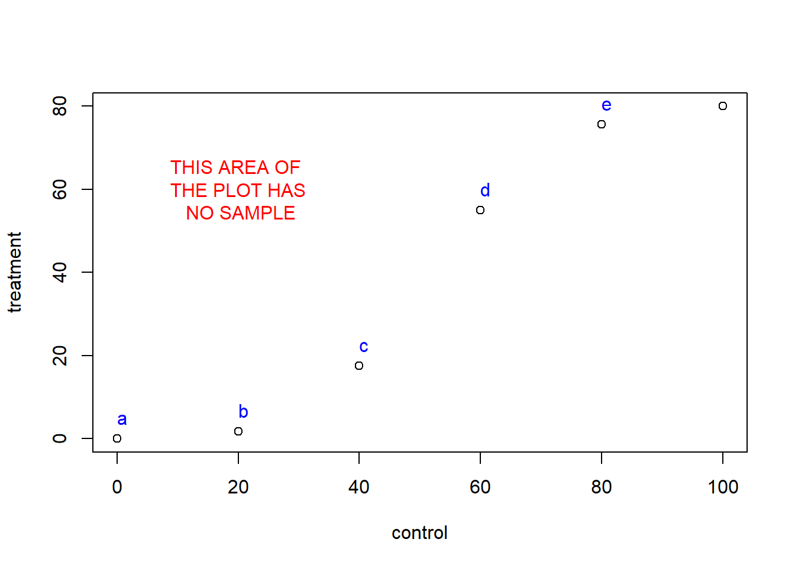
Shapes
polygon allows you to draw specific polygons. You just
need to give it the coordinates of each vertex. Again this is often to
highlight specific parts of the plot. This can be filled, or if you give
the denisty argument there will be a hash fill.

Saving
There are many different ways of saving your plots in R. The easiest way is to use the export button in the plot pane in RStudio. This is not good reproducible practice though as the code is not tied to the plot.
To save plots through the console, the argument you would need is name of file in which you want to save the plot. Plotting commands then can be entered as usual. The output would be redirected to the file.
bmp(filename, width = 480, height = 480, units = "px",
pointsize = 12)
jpeg(filename, width = 480, height = 480, units = "px",
pointsize = 12, quality = 75)When youre done with your plotting commands, enter the
dev.off() command.
Saving in pdf format
PDFs are maybe the most useful format to export into. PDFs are vector-based so each part of the plot is saved as scalable coordinates as opposed to specific pixels.
PDFs can then be opened in imaging software like illustrator or inkscape (this is a open source and free software). When you open a PDF in these programs you can fully customize the plots to your aesthetic with a graphic user interface. Furthermore as they are vector-based, they can be easily assembled into publication quality figures without resolution issues and pixelation.
## png
## 2
Practice 4.1 Using the iris dataset,
reproduce the plot below. Explore the function
pairs allowing to generate a matrix of scatter plots
between variables pairs (iris[1:4]). You will send me a
pdf file of the plot your made. You can also add your
code into a .Rmd in which you will import your image and knit
it in a .html file. You will email me [vianneydenis@g.ntu.edu.tw] your files (and/or link)
before next Monday so that I can review your work. The
title of your email should be: `Practice 4.1 (your
name: your student no.). ENJOY ;)

A refined scatter plot using base R graphics
ggplot2
The R language has extensive graphical capabilities. Graphics in R
may be created by many different methods including base
graphics and more advanced plotting packages such as
lattice.
A refined scatter plot using base R graphics
The ggplot2 package was created by Hadley Wickham to
provide an intuitive plotting system to rapidly generate publication
quality graphics. ggplot2 builds on the concept of the
Grammar of Graphics (Wilkinson 2005, Bertin 1983)
which describes a consistent syntax for the construction of a wide range
of complex graphics by a concise description of their components.
ggplot2 is a core part of the Tidyverse,
the group of packages designed to make data science easy and functional
in R. To get an introduction to the core concepts of Tidyverse check out
previous materials on tidyr and dplyr.
For an extensive gide on ggplot2 please refer to
R graphics Cookbook by Winston Chang available HERE.
## Warning: package 'ggplot2' was built under R version 4.2.3Why use ggplot2?
The structured syntax and high level of abstraction used by ggplot2
should allow for the user to concentrate on the visualizations instead
of creating the underlying code. On top of this central philosophy
ggplot2 has:
- Increased flexible over many plotting systems.
- An advanced theme system for professional/publication level graphics.
- Large developer base Many libraries extending its flexibility.
- Large user base Great documentation and active mailing list.
Grammar of graphics
How ggplot builds a plot.
A plot in ggplot2 consists of different primary
layering components, with the three primary components
being:
- The dataset that houses the data to be plotted. The data is what we want to visualize. It consists of variables, which are stored as columns in a data frame.
- The aesthetics which describe how data are to be mapped to the geometric elements (color, shape, size, etc..). Aesthetic attributes, or aesthetics, are visual properties of geoms, such as x and y position, line color, point shapes, etc. There are mappings from data values to aesthetics.
- The geometric elements to use in the plot (i.e.points, lines, rectangles, etc). Geoms are the geometric objects that are drawn to represent the data, such as bars, lines, and points.
Additional (optional) layering components include:
- Statistical elements such as smoothing, binning or transforming the variable
- Scales control the mapping from the values in the data space to values in the aesthetic space.
- Guides show the viewer how to map the visual properties back to the data space. The most commonly used guides are the tick marks and labels on an axis.
- Facets for conditional or trellis plots
- Coordinate systems for defining the plots shape (i.e.Cartesian, polar, spatial map projections, etc)
A refined scatter plot using base R graphics
Overview of a scatter plot
Overview of example code for a ggplot2 scatter plot.
ggplot(data = <default data set>,
aes(x = <default x axis variable>,
y = <default y axis variable>,
... <other default aesthetic mappings>),
... <other plot defaults>) +
geom_scatter(aes(size = <size variable for this geom>,
... <other aesthetic mappings>),
data = <data for this point geom>,
stat = <statistic string or function>,
position = <position string or function>,
color = <"fixed color specification">,
<other arguments, possibly passed to the _stat_ function) +
scale_<aesthetic>_<type>(name = <"scale label">,
breaks = <where to put tick marks>,
labels = <labels for tick marks>,
... <other options for the scale>) +
ggtitle("Graphics/Plot")+
xlab("Weight")+
ylab("Height")+
theme(plot.title = element_text(color = "gray"),
... <other theme elements>)Dont panic, you usually specify only a subset of arguments.
A refined scatter plot using base R graphics
Example
As seen above, in order to produce a ggplot2 graph we need a minimum of:
- Data to be used in graph
- Mappings of data to the graph (aesthetic mapping)
- What type of graph we want to use (The geom to use).
In the code below we define the data as our iris data
frame.
## [1] "gg" "ggplot"## Sepal.Length Sepal.Width Petal.Length Petal.Width Species
## 1 5.1 3.5 1.4 0.2 setosa
## 2 4.9 3.0 1.4 0.2 setosa
## 3 4.7 3.2 1.3 0.2 setosa
## 4 4.6 3.1 1.5 0.2 setosaNow we can see that we have gg/ggplot object (ggiris).
Within this gg/ggplot object the data has been defined, however
important information on how to map the data to the visual properties
(aesthetics) of the plot as well as what type of plot to use (geom) have
however yet to specified.
## Aesthetic mapping:
## <empty>## list()## list()The information to map the data to the plot can be added now using
the aes() function.
## Aesthetic mapping:
## * `x` -> `Petal.Length`
## * `y` -> `Petal.Width`## list()## list()But we are still missing the final component of our plot, the type of
plot to use (geom). Below the geom_point function is used
to specify a point plot, a scatter plot of Lenght values on the
x-axis versus Width values on the y values.
ggiris <- ggplot(data=iris)
ggiris2 <- ggiris+aes(x=Petal.Length,y=Petal.Width)
ggiris3 <- ggiris2+geom_point()## Aesthetic mapping:
## * `x` -> `Petal.Length`
## * `y` -> `Petal.Width`## list()## [[1]]
## geom_point: na.rm = FALSE
## stat_identity: na.rm = FALSE
## position_identityNow we have all the components of our plot, we need we can display the results.

Geoms
More typically, the data and aesthetics are defined within ggplot function and geoms applied afterwards. This makes it easier to switch between plot types to find the best way to visualize your data.
There are many geoms available in ggplot2:
geom_point()- Scatter plotsgeom_line()- Line plotsgeom_smooth()- Fitted line plotsgeom_bar()- Bar plotsgeom_boxplot()- Boxplotsgeom_jitter()- Jitter to plotsgeom_histogram()- Histogram plotsgeom_density()- Density plotsgeom_text()- Text to plotsgeom_errorbar()- Errorbars to plotsgeom_violin()- Violin plots

Smoothed line plots
## `geom_smooth()` using method = 'loess' and formula = 'y ~ x'Bar plots
ggiris_bar<- ggplot(data=iris, mapping=aes(x=Species))
ggiris_bar2<- ggiris_bar + geom_bar()
ggiris_bar2
Histograms
ggiris_hist <- ggplot(data=iris,
mapping=aes(x=Petal.Length))
ggiris_hist2 <- ggiris_hist + geom_histogram()
ggiris_hist2## `stat_bin()` using `bins = 30`. Pick better value with `binwidth`.

Box plots
ggiris_box <- ggplot(data=iris,
mapping=aes(x=Species,y=Petal.Length))
ggiris_box2 <- ggiris_box+geom_boxplot()
ggiris_box2

Other geoms
An overview of geoms and their arguments can be found in the
ggplot2 documentation or within the ggplot2
quick reference guides.
Aesthetics
In order to change the property on an aesthetic of a plot into a
constant value (e.g.set color of all points to red) we
can supply the color argument to the geom_point()
function.
ggiris_scatter <- ggplot(data=iris,
mapping=aes(x=Petal.Length,y=Petal.Width))
ggiris_scatter+geom_point(colour="red")As we discussed earlier however, ggplot2 makes use of
aesthetic mappings to assign variables in the data to the
properties/aesthetics of the plot. This allows the properties of the
plot to reflect variables in the data dynamically. In these examples we
supply additional information to the aes() function to
define what information to display and how it is represented in the
plot.
First we can recreate the plot we saw earlier.
ggiris_scatter <- ggplot(data=iris,
mapping=aes(x=Petal.Length,y=Petal.Width))
ggiris_scatter+geom_point()
Now we can adjust the aes mapping by supplying an
argument to the color parameter in the aes function. (Note
that ggplot2 accepts color or colour as parameter
name)
This simple adjustment allows for identification of the separation
between species for Petal.Length and
Petal.Width.
ggiris_scatter2 <- ggplot(data=iris,
mapping=aes(x=Petal.Length,y=Petal.Width,color=Species))
ggiris_scatter2 + geom_point()Similarly the shape of points may be adjusted.
ggiris_scatter3 <- ggplot(data=iris,
mapping=aes(x=Petal.Length,y=Petal.Width,shape=Species))
ggiris_scatter3 + geom_point()The aesthetic mappings may be set directly in the
geom_points() function as previously when specifying red.
This can allow the same ggplot object to be used by different aesthetic
mappings and varying geoms
ggiris_scatter4 <- ggplot(data=iris)
ggiris_scatter4 + geom_point(aes(x=Petal.Length,y=Petal.Width,color=Species, shape=Species))
Again, for a comprehensive list of parameters and aesthetic mappings
used in geom_type functions see the ggplot2
documentation for individual geoms by using ?geom_type
or visit the ggplot2 documentations pages and quick reference:
Faceting
One very useful feature of ggplot is faceting. This allows you to
produce several plots that subset by variables in your data. To facet
our data into multiple plots we can use the facet_wrap or
facet_grid function specifying the variable we split by.
The facet_grid function is well suited to splitting the
data by two factors.
Lets get another dataset for the demo. Here we can plot the data
with the Smokes variable as rows and Sex
variable as columns.
patients_clean<-read.delim('data/patients_clean.txt')
pcPlot <- ggplot(data=patients_clean,aes(x=Height,y=Weight,
colour=Sex))+geom_point()
pcPlot + facet_grid(Smokes~Sex)To split by one factor we use the the facet_grid()
function again, but omit the variable before the ~. This will facet
along columns in plot.
pcPlot <- ggplot(data=patients_clean,aes(x=Height,y=Weight,
colour=Sex))+geom_point()
pcPlot + facet_grid(~Sex)Similarly, to split along rows in plot, the variable is placed before the ~..
pcPlot <- ggplot(data=patients_clean,aes(x=Height,y=Weight,
colour=Sex))+geom_point()
pcPlot + facet_grid(Sex~.)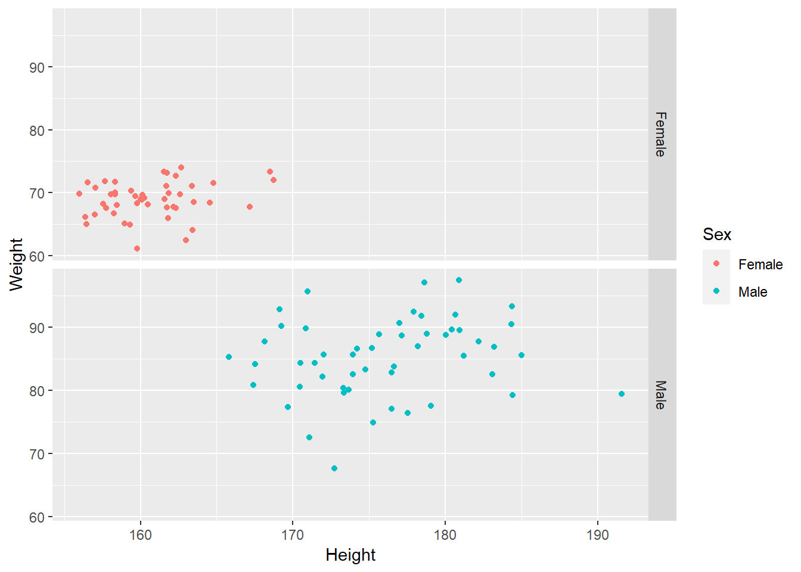
The facet_wrap() function offers a less grid-based
structure but is well suited to faceting data by one variable. For
facet_wrap() we follow as similar syntax to
facet_grid().
pcPlot <- ggplot(data=patients_clean,aes(x=Height,y=Weight,
colour=Sex))+geom_point()
pcPlot + facet_wrap(~Smokes)For more complex faceting both facet_grid and
facet_wrap can accept combinations of variables. Here we
use facet_wrap.
pcPlot <- ggplot(data=patients_clean,aes(x=Height,y=Weight,
colour=Sex))+geom_point()
pcPlot + facet_wrap(~Pet+Smokes+Sex)
Or in a nice grid format using facet_grid() and the Smokes variable against a combination of Gender and Pet.
Plotting order
We will shortly discuss how to change various aspects of the plot layout and appearance. However, a common-asked question is how to change the order in which R plots a categorical variable. Consider the boxplot to compare weights of males and females:

This is related the question raised before about the order of the factor levels. Here, R decides the order to arrange the boxes according to the levels of the categorical variable. If there are no levels or the levels are not ordered it defaults to the alphabetical order. i.e.Female before Male.
## NULLDepending on the message we want the plot to convey, we might want control over the order of boxes. The factor functions allows us to explicitly change the order of the levels.
Scales
Scales and their legends have so far been handled using ggplot2
defaults. ggplot2 offers functionality to have finer
control over scales and legends using the scale methods.
Scale methods are divided into functions by combinations of:
the aesthetics they control.
the type of data mapped to scale.
Try typing in scale_ then tab to autocomplete. This will
provide some examples of the scale functions available in
ggplot2. Although different scale functions accept some
variety in their arguments, common arguments to scale functions
include:
name - The axis or legend title
limits - Minimum and maximum of the scale
breaks - Label/tick positions along an axis
labels - Label names at each break
Very common scale functions are **scale_(x/y)_(continuous/discrete)**. In the follwoing example we control the continuous scale on the x-axis by providing a name, X-axis limits, the positions of breaks (ticks/labels) and the labels to place at breaks.
pcPlot + geom_point() + facet_grid(Smokes~Sex)+
scale_x_continuous(name="height ('cm')",
limits = c(100,200),
breaks=c(125,150,175),
labels=c("small","justright","tall"))Similary control over discrete scales is shown below.
pcPlot <- ggplot(data=patients_clean,aes(x=Sex,y=Height))
pcPlot +
geom_violin(aes(x=Sex,y=Height)) +
scale_x_discrete(labels=c("Women", "Men"))Multiple X/Y scales can be combined to give full control of axis marks.
pcPlot <- ggplot(data=patients_clean,aes(x=Sex,y=Height,fill=Smokes))
pcPlot +
geom_violin(aes(x=Sex,y=Height)) +
scale_x_discrete(labels=c("Women", "Men"))+
scale_y_continuous(breaks=c(160,180),labels=c("Short", "Tall"))When using fill, color, linetype, shape, size or alpha aesthetic mappings the scales are automatically selected for you and the appropriate legends created.
pcPlot <- ggplot(data=patients_clean,
aes(x=Height,y=Weight,colour=Sex))
pcPlot + geom_point(size=4)
In the above example the discrete colours for the Sex variable was
selected by default. Manual control of discrete variables can be
performed using scale_colour_manual with the values
parameter. Additionally in this example an updated name for the legend
is provided.
pcPlot <- ggplot(data=patients_clean,
aes(x=Height,y=Weight,colour=Sex))
pcPlot + geom_point(size=4) +
scale_colour_manual(values = c("Green","Purple"),
name="Gender")Here we have specified the colours to be used (hence the manual) but when the number of levels to a variable are high this may be impractical and often we would like ggplot2 to choose colours from a scale of our choice.
The brewer set of scale functions allow the user to make use of a range of palettes available from colorbrewer.
- Diverging
BrBG, PiYG, PRGn, PuOr, RdBu, RdGy, RdYlBu, RdYlGn, Spectral
- Qualitative
Accent, Dark2, Paired, Pastel1, Pastel2, Set1, Set2, Set3
- Sequential
Blues, BuGn, BuPu, GnBu, Greens, Greys, Oranges, OrRd, PuBu, PuBuGn, PuRd, Purples, RdPu, Reds, YlGn, YlGnBu, YlOrBr, YlOrRd
pcPlot <- ggplot(data=patients_clean,
aes(x=Height,y=Weight,colour=Pet))
pcPlot + geom_point(size=4) +
scale_colour_brewer(palette = "Set2")## Warning: Removed 5 rows containing missing values or values outside the scale range
## (`geom_point()`).For more details on palette sizes and styles visit the colorbrewer website and ggplot2 color scales reference page.
So far we have looked a qualitative scales but ggplot2
offers much functionality for continuous scales such as for size, alpha
(transparency), color and fill.
For transparency:
scale_alpha_continuous()For control of size:
scale_size_continuous()
Both these functions accept the range of alpha/size to be used in plotting. Below the range of alpha to be used in plot is limited to between 0.5 and 1.
pcPlot <- ggplot(data=patients_clean,
aes(x=Height,y=Weight,alpha=BMI))
pcPlot + geom_point(size=4) +
scale_alpha_continuous(range = c(0.5,1))Below the range of sizes to be used in plot is limited to between 3 and 6.
pcPlot <- ggplot(data=patients_clean,
aes(x=Height,y=Weight,size=BMI))
pcPlot + geom_point(alpha=0.8) +
scale_size_continuous(range = c(3,6))
The limits of the scale can also be controlled but it is important to note data outside of scale is removed from plot.
pcPlot <- ggplot(data=patients_clean,
aes(x=Height,y=Weight,size=BMI))
pcPlot + geom_point() + scale_size_continuous(range = c(3,6),
limits = c(25,40))## Warning: Removed 14 rows containing missing values or values outside the scale range
## (`geom_point()`).What points of scale to be labeled and labels text can also be controlled.
pcPlot <- ggplot(data=patients_clean,
aes(x=Height,y=Weight,size=BMI))
pcPlot + geom_point() +
scale_size_continuous(range = c(3,6),
breaks=c(25,30),
labels=c("Good","Good but not 25")) 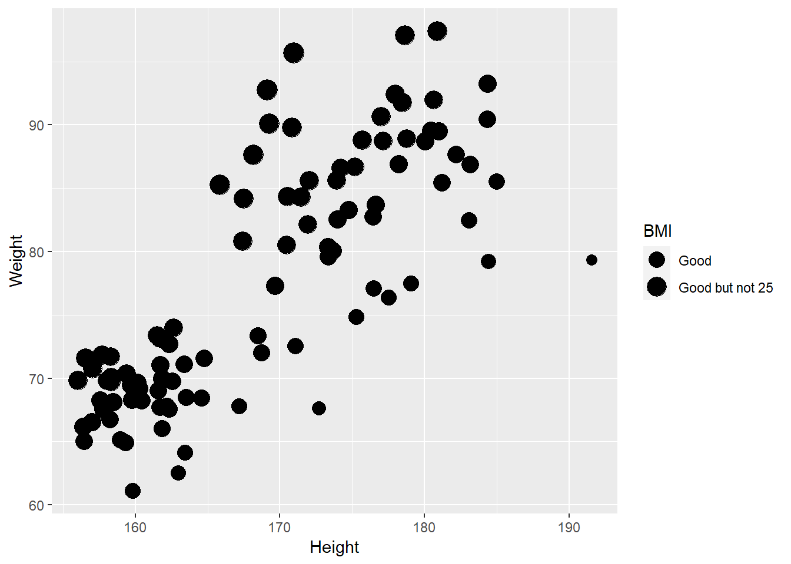
Control of color/fill scales can be best achieved through the gradient subfunctions of scale.
2 colour gradient (eg. low to high BMI): scale_(colour/fill)_gradient
Diverging colour scale with a midpoint colour (e.g.Down, No Change, Up): scale_(colour/fill)_gradient2
Both functions take a common set of arguments:
- low - colour for low end of gradient scale
- high - colour for high end of gradient scale.
- na.value - colour for any NA values.
An example using scale_color_gradient below sets the low
and high end colors to White and Red
respectively
pcPlot <- ggplot(data=patients_clean,
aes(x=Height,y=Weight,colour=BMI))
pcPlot + geom_point(size=4,alpha=0.8) +
scale_colour_gradient(low = "White",high="Red")
Similarly we can use the scale_color_gradient2 function
which allows for the specification of a midpoint value and its
associated color.
pcPlot <- ggplot(data=patients_clean,
aes(x=Height,y=Weight,colour=BMI))
pcPlot + geom_point(size=4,alpha=0.8) +
scale_colour_gradient2(low = "Blue",mid="Black", high="Red",
midpoint = median(patients_clean$BMI))As with previous continuous scales, limits and custom labels in scale legend can be added.
pcPlot <- ggplot(data=patients_clean,
aes(x=Height,y=Weight,colour=BMI))
pcPlot + geom_point(size=4,alpha=0.8) +
scale_colour_gradient2(low = "Blue",
mid="Black",
high="Red",
midpoint = median(patients_clean$BMI),
breaks=c(25,30),labels=c("Low","High"),
name="Body Mass Index")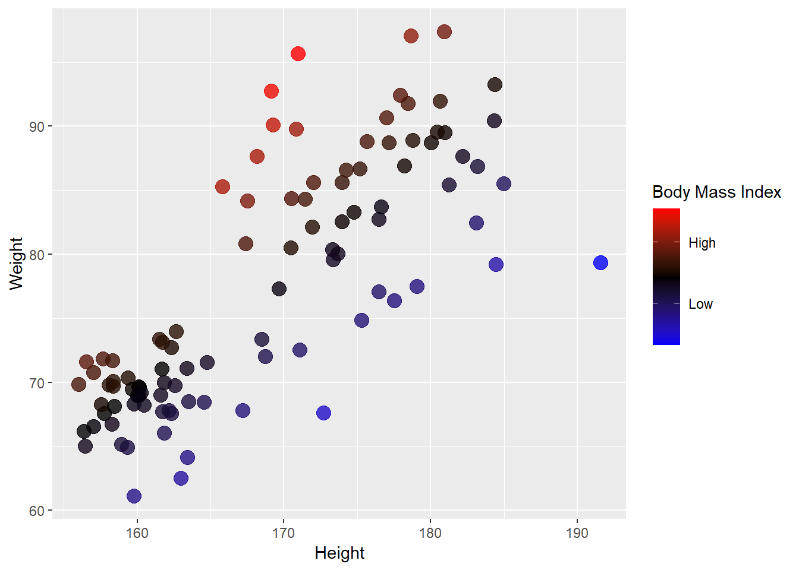
Multiple scales may be combined to create high customizable plots and scales
pcPlot <- ggplot(data=patients_clean,
aes(x=Height,y=Weight,colour=BMI,shape=Sex))
pcPlot + geom_point(size=4,alpha=0.8)+
scale_shape_discrete(name="Gender") +
scale_colour_gradient2(low = "Blue",mid="Black",high="Red",
midpoint = median(patients_clean$BMI),
breaks=c(25,30),labels=c("Low","High"),
name="Body Mass Index")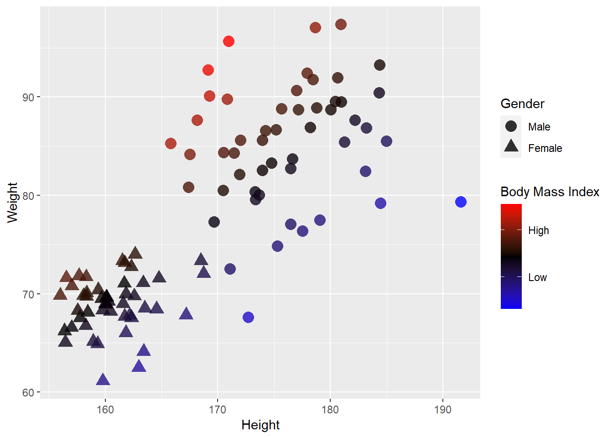
Transformations
In ggplot2 many of the statistical transformations are
performed without any direct specification
e.g.geom_histogram() seen before will use
stat_bin() function to generate bin counts to be used in
plot.
An example of statistical methods in ggplot2 which are
very useful include the stat_smooth() and
stat_summary() functions.
Fitting lines
The stat_smooth() function can be used to fit a line to
the data being displayed.
pcPlot <- ggplot(data=patients_clean,
mapping=aes(x=Weight,y=Height))
pcPlot+geom_point()+stat_smooth()## `geom_smooth()` using method = 'loess' and formula = 'y ~ x'By default a loess smooth line is plotted by stat_smooth. Other methods available include lm, glm, gam, rlm.
pcPlot <- ggplot(data=patients_clean,
mapping=aes(x=Weight,y=Height))
pcPlot+geom_point()+stat_smooth(method="lm")## `geom_smooth()` using formula = 'y ~ x'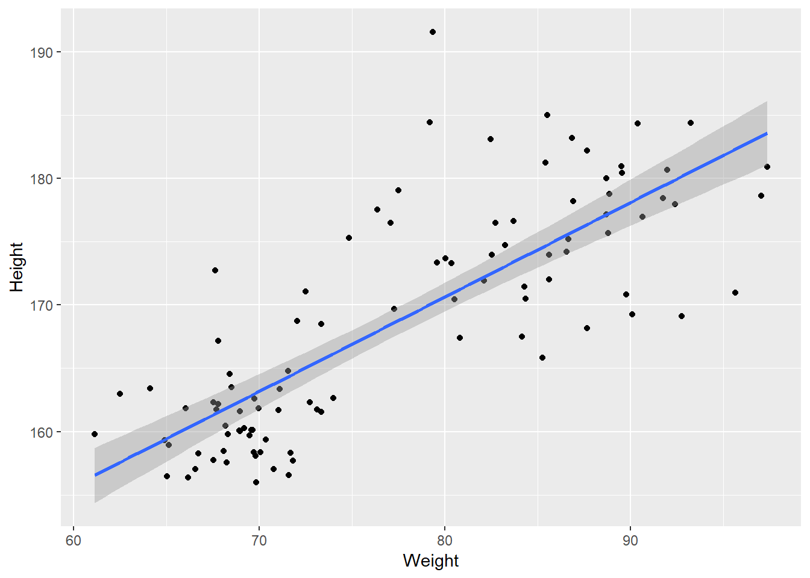
A useful feature of ggplot2 is that it uses previously
defined grouping when performing smoothing. If color by Sex
is an aesthetic mapping then two smooth lines are drawn, one for each
sex.
pcPlot <- ggplot(data=patients_clean,
mapping=aes(x=Weight,y=Height,colour=Sex))
pcPlot+geom_point()+stat_smooth(method="lm")## `geom_smooth()` using formula = 'y ~ x'
This behavior can be overridden by specifying an aes
within the stat_smooth() function and setting
inherit.aes to FALSE.
pcPlot <- ggplot(data=patients_clean,
mapping=aes(x=Weight,y=Height,colour=Sex))
pcPlot+geom_point()+stat_smooth(aes(x=Weight,y=Height),method="lm",
inherit.aes = F)## `geom_smooth()` using formula = 'y ~ x'Summary statistics
stat_summary() allows for a custom statistical function
to be performed and then visualized.
The fun parameter specifies a function to apply to the y
variables for every value of x. In this example we use it to plot the
quantiles of the Female and Male Height
data
pcPlot <- ggplot(data=patients_clean,
mapping=aes(x=Sex,y=Height)) + geom_jitter()
pcPlot + stat_summary(fun=quantile, geom="point",shape=8,
colour="purple", size=4) ## Themes
## Themes
Themes specify the details of data independent elements of the plot. This includes titles, background colour, text fonts etc.
The graphs created so far have all used the default themes,
theme_grey(), but ggplot2 allows for the
specification of theme used. Predefined themes can be applied to a
ggplot2 object using a family of functions
theme_style()
Here is a scatter with the default theme

and the same scatter plot with the minimal theme.
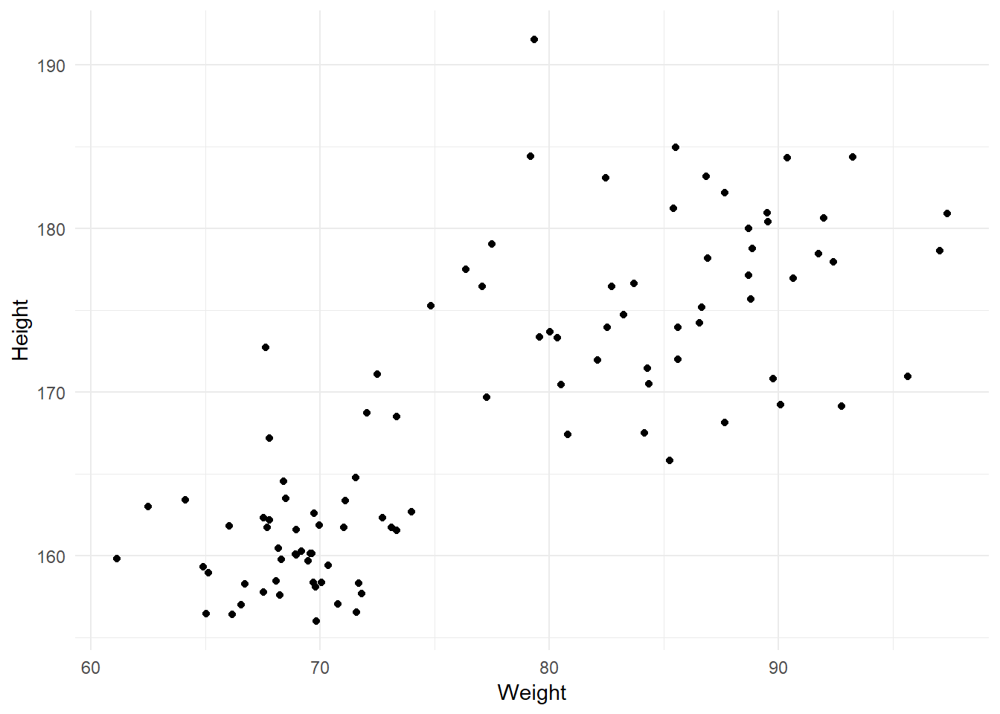
Predefined themes
Several predifined themes are available within ggplot2
including:
theme_bwtheme_classictheme_darktheme_graytheme_lighttheme_linedrawtheme_minimal
Packages such as ggthemes also
contain many useful collections of predined theme_style functions.
Custom themes
As well as making use of predefined theme styles,
ggplot2 allows for control over the attributes and elements
within a plot through a collection of related functions and
attributes.
theme() is the global function used to set attributes
for the collections of elements/components making up the current
plot.
Within the theme functions there are 4 general graphic elements which may be controlled
- rect
- line
- text
- title
and 5 groups of related elements:
- axis
- legend
- strip
- panel (plot panel)
- plot (Global plot parameters) ]
These elements may be specified by the use of their appropriate element functions including:
element_line()element_text()element_rect()
and additionally element_blank() to set an element to
blank.
A detailed description of controlling elements within a theme can be
seen at the ggplot2 vignette and by typing
?theme into the console (see ggplot2s themes).
To demonstrate customizing a theme, in the example below we alter one
element of theme. Here we will change the text colour for the plot (Note
because we are changing a text element we use the
element_text() function).
pcPlot <- ggplot(data=patients_clean,
mapping=aes(x=Weight,y=Height))+
geom_point()
pcPlot+
theme(
text = element_text(colour="red")
)
If we wished to set the y-axis label to be at an angle we can adjust that as well.
pcPlot <- ggplot(data=patients_clean,
mapping=aes(x=Weight,y=Height))+geom_point()
pcPlot + theme(text = element_text(colour="red"),
axis.title.y = element_text(angle=0))
Finally we may wish to remove axis line, set the background of plot panels to be white and give the strips (title above facet) a cyan background colour.
pcPlot <- ggplot(data=patients_clean,
mapping=aes(x=Weight,y=Height))+
geom_point()+
facet_grid(Sex~Smokes)
pcPlot+
theme(
text = element_text(colour="red"),
axis.title.y = element_text(angle=0),
axis.line = element_line(linetype = 0),
panel.background=element_rect(fill="white"),
strip.background=element_rect(fill="cyan")
)
A useful example of using the theme can be seen in controlling the legend. By default the legend is in right of plot.

By modifying the theme we can control the legend positioning.
pcPlot <- ggplot(data=patients_clean,aes(x=Height,y=Weight,
colour=Sex))+geom_point()
pcPlot+theme(legend.position="left")
We can control all aspects of a legend as we can for other theme elements.
pcPlot <- ggplot(data=patients_clean,aes(x=Height,y=Weight,
colour=Sex))+geom_point()
pcPlot+theme(legend.text = element_text(colour="darkred"),
legend.title = element_text(size=20),
legend.position = "bottom"
)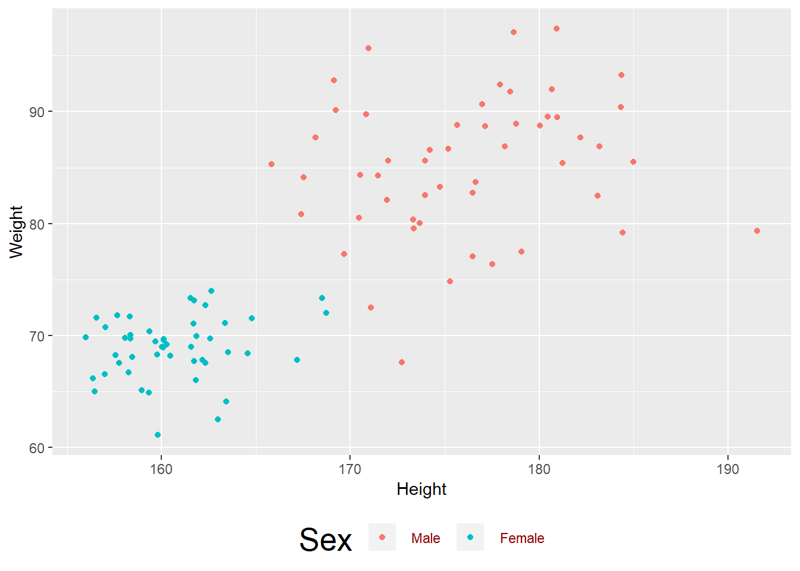
When altering themes we have been using the + operator
to add themes as we would adding geoms,scales and stats.
When using the + operator:
Themes elements specified in new scheme replace elements in old theme
Theme elements in the old theme which have not been specified in new theme are maintained.
This makes the + operator useful for building up from
old themes.
In the example below, we maintain all elements set by theme_bw() but overwrite the theme element attribute of the colour of text.
pcPlot <- ggplot(data=patients_clean,
mapping=aes(x=Weight,y=Height))+geom_point()+theme_bw()
pcPlot+
theme(text = element_text(colour="red"))In contrast %+replace% replaces all elements within a
theme regardless of whether they have been previously specfied in old
theme.
When using the %+replace% operator:
Theme elements specified in new scheme replace elements in old theme
Theme elements in the old theme which have not been specified in new theme are also replaced by blank theme elements.
oldTheme <- theme_bw()
newTheme_Plus <- theme_bw() +
theme(text = element_text(colour="red"))
newTheme_Replace <- theme_bw() %+replace%
theme(text = element_text(colour="red"))
oldTheme$text## List of 11
## $ family : chr ""
## $ face : chr "plain"
## $ colour : chr "black"
## $ size : num 11
## $ hjust : num 0.5
## $ vjust : num 0.5
## $ angle : num 0
## $ lineheight : num 0.9
## $ margin : 'margin' num [1:4] 0points 0points 0points 0points
## ..- attr(*, "unit")= int 8
## $ debug : logi FALSE
## $ inherit.blank: logi TRUE
## - attr(*, "class")= chr [1:2] "element_text" "element"## List of 11
## $ family : chr ""
## $ face : chr "plain"
## $ colour : chr "red"
## $ size : num 11
## $ hjust : num 0.5
## $ vjust : num 0.5
## $ angle : num 0
## $ lineheight : num 0.9
## $ margin : 'margin' num [1:4] 0points 0points 0points 0points
## ..- attr(*, "unit")= int 8
## $ debug : logi FALSE
## $ inherit.blank: logi FALSE
## - attr(*, "class")= chr [1:2] "element_text" "element"## List of 11
## $ family : NULL
## $ face : NULL
## $ colour : chr "red"
## $ size : NULL
## $ hjust : NULL
## $ vjust : NULL
## $ angle : NULL
## $ lineheight : NULL
## $ margin : NULL
## $ debug : NULL
## $ inherit.blank: logi FALSE
## - attr(*, "class")= chr [1:2] "element_text" "element"This means that %+replace% is most useful when creating
new themes.
In the examples we have shown you we have been modifying the theme for a specific plot. But once you have a theme that you really like you may want it to apply to every plot you draw.
The active theme is automatically applied to every plot you draw. Use
theme_get to get the current theme, and
theme_set to completely override it.
Titles and Labels
So far no plot titles have been specified. Plot titles can be
specified using the labs functions.
pcPlot <- ggplot(data=patients_clean,
mapping=aes(x=Weight,y=Height))+geom_point()
pcPlot+labs(title="Weight vs Height",y="Height (cm)")
You can also specify titles using the ggtitle and
xlab/ylab functions.
pcPlot <- ggplot(data=patients_clean,
mapping=aes(x=Height,y=Weight))+geom_point()
pcPlot+ggtitle("Weight vs Height")+ylab("Height (cm)")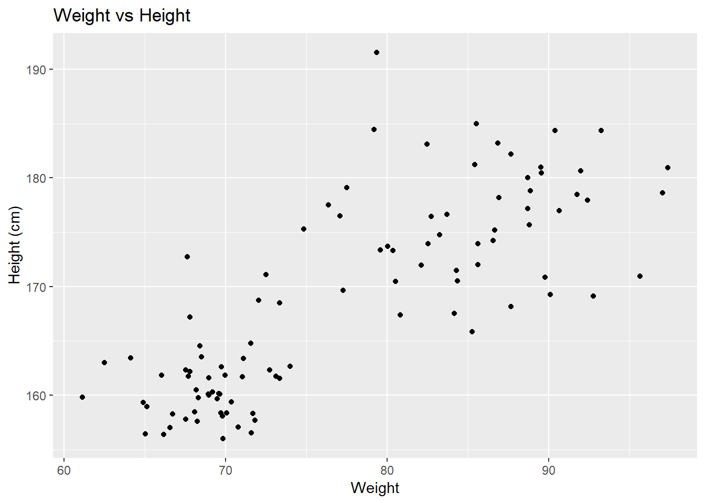
Saving plot
Plots produced by ggplot can be saved in the same way as
base plots. The ggsave() function allows for
additional arguments to be specified including the type, resolution and
size of plot.
By default ggsave() will use the size of your current
graphics window when saving plots so it may be important to specify
width and height arguments desired.
References
Credits
Course content extracted and adapted from Plotting in R of the Bioinformatics Resource Center, Rockefeller University (GPL v2 license).
Practice 4.2 Using the rairuoho dataset
you will use a ggplot2 visualization to show that
over the course of the experiment the growth
of the grass is becoming higher in the nutrient
treatment than in the water treatment. You are free to
use the visualization that you think makes the most sense Do not forget
to embellish your visualization and the use of a legend. You will send
me a pdf file of the plot your made. You can also add
your code into a .Rmd in which you will import your image and
knit it in a .html file. You will email me [vianneydenis@g.ntu.edu.tw] your files (and/or link)
before next Monday so that I can review your work. The
title of your email should be: `Practice 4.1 (your
name: your student no.). ENJOY ;)